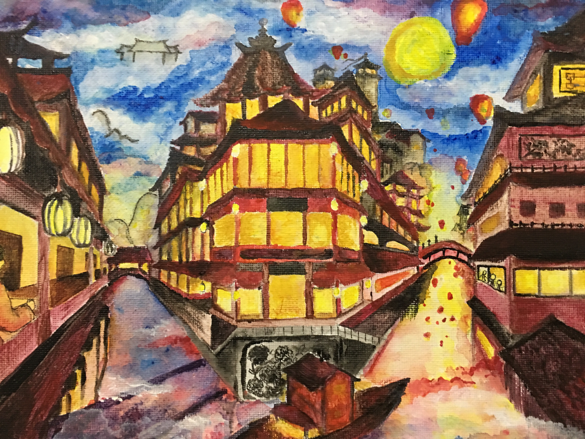
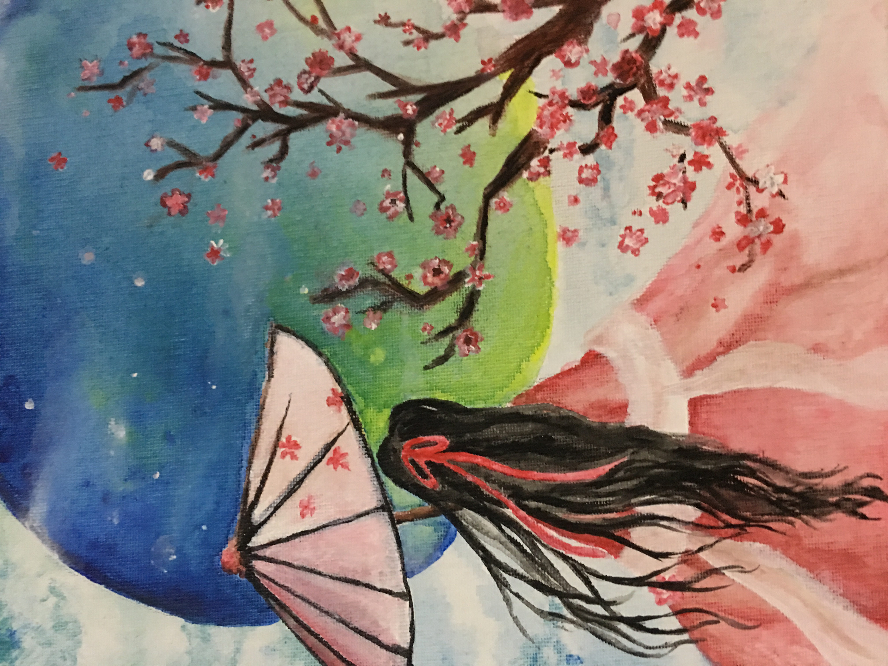

Work Experience
Software Developer Co-op at Quanser Consultant Inc.
In the summer of 2015, I had a co-op opportunity as a software developer at Quanser Consultant Inc and created 3 demo projects for their new product, Qbot2. My projects centered on demonstrating the functionalities of Qbot 2 and possible experiments that could perform with its control system.
- "Leader and Follower:" Used dead reckoning with XY coordinates from encoders and gyro calculations to track and pursue the leader Qbot; their coordinate locations were updated through the network communication to increase the accuracy of the calculation
- Image Processing Program: Performed a threshold on the RGB values acquired from Qbot2 to target and recognize specific object of certain shape and colour
- Lidar Infrared Area Mapping: Analyzed depth data acquired from Lidar and created a mapping of the surrounding area; incorporated in path planning algorithm
Projects and Extracurriculars
BoosterCat
BoosterCat, a pet simulation game, aims to provide the most realistic experience with Tiva C Lauchpad and the addition Tiva Boosterpack.
FIRST Robotics Team 4001
Team 4001 is a FIRST Robotics team from St. Robert CHS. I, as the team captain, is proud to lead a team of 85 members, dedicating many hours everyday after school to my work in robotics. Walking down the path of discovering my passion, I grew from an oblivious beginner who did not know which future most appealed to me to an experienced programmer, leading the team to achieve great success in automation. I realized that I had a strong interest in programming, which gave me the motivation to persist and excel in self-learning LabView and Java. Before becoming the captain, I was the second lead programmer who presented the technical report about our robot to the judges, which has earned my team the Industrial Design Award. Furthermore, I advocated the importance of innovative and technological development to the Superintendent from York Catholic District School Board at the Fall Fiesta Off-Season event and I promoted the team and the value of STEM live on Rogers Daytime. With all my effort in supporting the team from technical contribution on the programming side to active promotion of the team within the local community, I was revered and nominated as a Dean’s List Finalist at the regional competition. Thus, I was elected to be the team captain with support from my teammates at the end of last competition season. After becoming the captain, I obtained more experience and consolidated my skill in programming through multiple projects during my summer co-op term at Quanser Consultant Inc. During offseason, I taught lessons on programming with Labview from two months in preparation for the competition build season, monitored and hosted weekly webinars representing FRC Canada to help rookie teams, took the responsibility of the Head Referee at FIRST Lego League regional, and continued to communicate and manage the team. Team 4001 Newsletter 2016
FIRST Lego League Library Program
As the captain of FIRST Robotics Team 4001, I took the initiative of becoming one of the four volunteers to participate in the FIRST Lego League Library Program in order to raise the awareness of innovation and technology in the local community. This program is provided to elementary school students who are interested in learning about control systems, robotics sensors, automation, and mechanics. There were 20 students who completed this six-week program; all of which gave high regards and very positive feedback. Since it was the first time that this program took place at Richmond Hill Public Library, my teachers, teammates, and I prepared many of the lesson plans and materials, of which I taught the programming lessons on Lego Mindstorm EV3 because I specialized in coding on the FRC team. After completing the program in June, we were able to bring the parents’ interest in creating a community FLL team. In September 2015, the library invited Team 4001 to arrange more sessions on this topic because of its success and popularity. I organized the FIRST Lego League Regional at St. Robert CHS with the guidance of my teachers, Ms. Koon and Mr. Keenan, and help from my team, Team 4001. I took the responsibility of being the Head Referee at the regional competition believing that supporting young children’s interest in the field of science, technology, engineering and mathematics would be crucial for the future. Since all the referees needed to fully understand the rules and to make critical judgements during the competition, I provided training sessions to help my team of referees familiarize themselves with the rules and competition field setup. As the Head Referee, I maintained orders in the field, made fair calls if the referees had doubts about the situation (it is the Head Referee’s judgement if none of the rules or updates indicate anything regarding the occurring situation) and explained any unclear judgements to the competitors.
The Axiom School Newspaper
As the editor-in-chief, I supervised a team of 35 members to write articles on school-wide events, global issues, and club activities, successfully reaching a monthly view of 200. Furthermore, I edited articles and other materials submitted for publication to improve readability and confer with reporters regarding changes in content, style or organization. The Axiom School Newspaper
Art Work
- 

- 